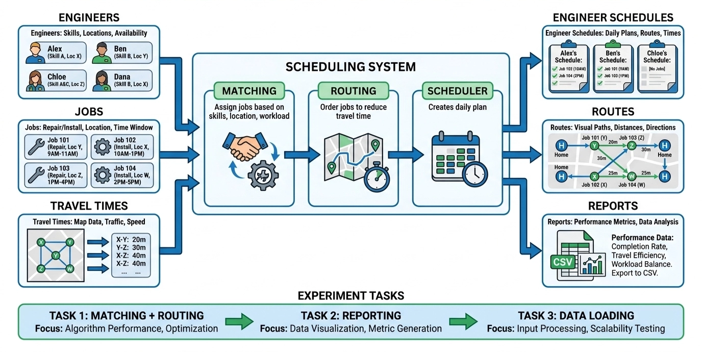

!
Tool Rules
You CAN use
- VS Code with Claude Code on the remote desktop
2
Before the Task
Set up the environment
Open a terminal in VS Code and run:
bash
source /etc/genius/session.env
cd ~/GENIUS_pilot
conda activate genius_pilot
git branch --show-current
The branch should already be prepared and look like
participant-ai-01. Do not create or switch branches unless the organiser asks you to.
Start screen recording
After you can see the full remote desktop in your browser, open a terminal and run:
bash — start recording
/usr/local/bin/genius-screen-recorder start
/usr/local/bin/genius-screen-recorder status
Status should show
running and a display size of at least 1280x720 (usually 1920x1080). If recording fails or the size looks too small, tell the organiser before starting the task.
If your DCV connection drops briefly, recording should restart automatically once the desktop is back. You do not need to run
start again unless the organiser asks.
Do not stop background monitoring or recording during the task. These run independently of terminal windows; closing a terminal does not stop them.
3
Time Guidance & System Overview
What this system does
This is a field engineer scheduling system. It:
- assigns jobs to engineers based on skills and location
- finds a good travel route for each engineer
- creates reports showing each engineer's schedule
- can load job data from files
Example: Alice is at Location A and can do repair work. A repair job at Location A is a good match for Alice. If Alice has several jobs, the system chooses an order for visiting them.

Project structure
src/ main source code src/models/ Engineer and Job classes src/optimization/ matching and routing algorithms src/scheduling/ scheduler src/features/ reports and data loading data/ sample data and benchmark files tests/ unit and performance tests reports/ generated CSV reports
Time guidance
You have 2 hours total. If you run out of time, stop where you are — it is okay if not all tasks are complete.
| Phase | Suggested time |
|---|---|
| Setup, survey, and code exploration | 10 min |
| Task 1 — Matching & Routing | 60 min |
| Task 2 — Reporting | 25 min |
| Task 3 — Data Integration | 15 min |
| Save work, finish commands, post-survey | 10 min |
4
Task 1 — Improve Matching & Routing
~60 min
Improve how jobs are assigned to engineers and how travel routes are calculated.
Problems to fix:
- Routing tries every possible route (brute-force) — very slow for many jobs.
- Matching assigns jobs one-by-one to the closest engineer, which can overload some engineers.
Steps
Quick sanity check
Run this to confirm the scheduler works end-to-end:
bash — quick demo
python -c "from src.models.engineer import Engineer; from src.models.job import Job; from src.scheduling.scheduler import Scheduler; engineers=[Engineer(1,'Alice','A',['repair'],8.0),Engineer(2,'Bob','B',['install'],8.0)]; jobs=[Job(1,'A','09:00',['repair'],1.0),Job(2,'B','10:00',['install'],1.0),Job(3,'B','11:00',['repair'],1.0)]; travel={'A':{'A':0.0,'B':0.5},'B':{'A':0.5,'B':0.0}}; a,r,u=Scheduler(engineers,jobs,travel).create_schedule(); print('Assignments:', {k:[j.id for j in v] for k,v in a.items()}); print('Routes:', r); print('Unassigned:', [j.id for j in u])"
bash — initial tests
python -m unittest tests.test_matching tests.test_routing tests.test_benchmarks -vCheckpoint A — Routing
bash
python -m unittest tests.test_routing tests.test_routing_checkpoint_a tests.test_benchmarks.TestBenchmarksWithOptimal.test_benchmark_small_01 tests.test_benchmarks.TestBenchmarksWithOptimal.test_benchmark_small_02 tests.test_benchmarks.TestBenchmarksWithOptimal.test_benchmark_small_03 tests.test_benchmarks.TestBenchmarksWithOptimal.test_brute_force_routing_optimal -v- Every test shows
ok - Benchmark output has
travel_time_ratio <= 1.5
Checkpoint B — Matching
bash
python -m unittest tests.test_matching tests.test_benchmarks.TestBenchmarksWithOptimal.test_benchmark_small_04 tests.test_benchmarks.TestBenchmarksWithOptimal.test_benchmark_small_05 tests.test_routing -v- Every test shows
ok assignment_accuracy = 1.0travel_time_ratio <= 1.5- No jobs are unassigned in both benchmark tests
Checkpoint C — Scalability
bash
python -m unittest tests.performance.test_scalability tests.test_routing tests.test_matching tests.test_benchmarks -v- Target: pass at least 3 of 5 scalability tests
- This also confirms routing, matching, and benchmarks still pass
5
Task 2 — Reporting on Engineer Schedules
~25 min
The CSV report code has bugs and a missing feature. Fix the code so all tests pass.
Steps
bash — run Task 2 tests
python -m unittest tests.test_report_correctness -vTask 2 Pass Criterion
- All tests in
tests.test_report_correctnessshowok
6
Task 3 — External Job Data Integration
~15 min
The data loader is missing input validation. Add the missing validation so all tests pass.
Steps
bash — run Task 3 tests
python -m unittest tests.test_data_loader -vTask 3 Pass Criterion
- All tests in
tests.test_data_loadershowok
7
After the Task
~10 min
Run these commands before filling the post-experiment survey:
bash — stop recording
/usr/local/bin/genius-screen-recorder stop
/usr/local/bin/genius-screen-recorder status
bash — save and submit work
source /etc/genius/session.env
cd ~/GENIUS_pilot
./SCRIPTS/submit_participant_work.sh "$PARTICIPANT_ID" "$SESSION_ID"
The submission command runs the official checkpoints and prints
PASS, PARTIAL, FAIL, or NOT RUN for each one. A message from Claude Code saying a task is complete is not an official completion result. If storage or push fails, tell the organiser; local evidence is retained for recovery.